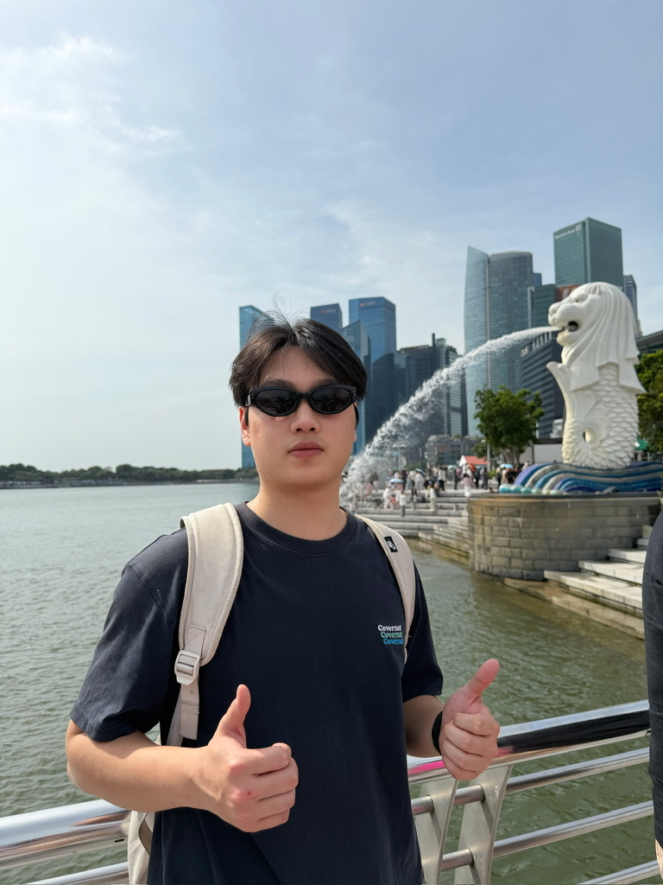

xuankun@whu: ~ — zsh

whoami
Xuankun Rong 容旋坤
cat role.txt
Ph.D. Student @ Wuhan University
echo $RESEARCH
Trustworthy AI · Reinforcement Learning · Intelligent Agents
cat about.md
I am a Ph.D. student in the School of Computer Science at Wuhan University, advised by Prof. Mang Ye. I received my B.Eng. from the School of Cyber Science and Engineering at Wuhan University in 2025.
I am broadly interested in trustworthy AI, reinforcement learning, and intelligent agents. My work seeks to understand and shape how AI systems learn, reason, and act, with the goal of making increasingly capable models reliable and aligned with human intent.
cat papers.bib
@year{2026}
@year{2025}
cat work.log
- to Present
- to
- to
cat news.log
- ReFrame accepted to Findings of EMNLP 2026.
- Invited to serve as a reviewer for NeurIPS 2026.
- SafeGRPO accepted to CVPR 2026.
- Invited to serve as a reviewer for ICML 2026 and ECCV 2026.
Earlier news
- Two papers accepted to AAAI 2026, including one Oral presentation.
- Invited to serve as a reviewer for CVPR 2026.
- Believe Your Eyes (BYE) accepted to NeurIPS 2025.
- Released BYE, our work on backdoor defense for MLLMs.
- CAN accepted to ICML 2025.
- Received a Nomination Award in the China Network Security Innovation and Entrepreneurship Competition.
- Won National First Prize and the Most Innovative and Entrepreneurial Award in the 17th National College Student Information Security Contest.
- Advanced to the National Finals of the 17th National College Student Information Security Contest.
- Won First Prize in the China Undergraduate Computer Design Competition, Middle South Division.
cat awards.json
- Elite Ph.D. Talent Program in Mathematics and Artificial Intelligence
Wuhan University · 7 members selected school-wide
- Lei Jun Computer Graduate Scholarship
- National First Prize, 17th National College Student Information Security Contest